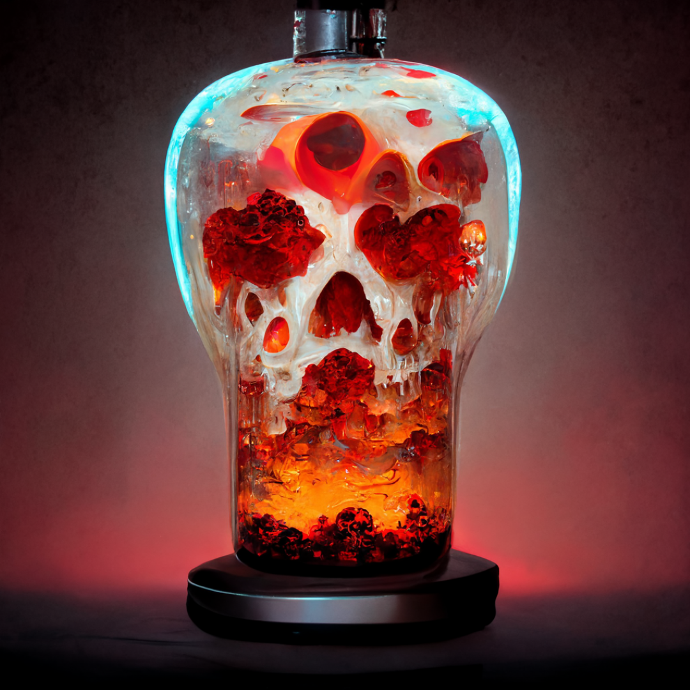
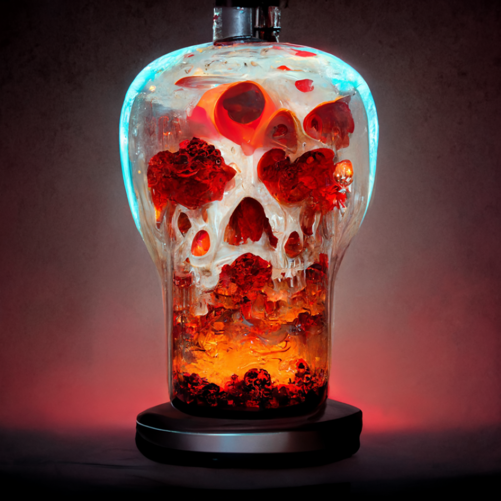

Red Lava Lamp of Skulls


When I was a boy the calming motions of a red lava lamp put me to sleep. This one looks to make the condition permanent. Dreary.


When I was a boy the calming motions of a red lava lamp put me to sleep. This one looks to make the condition permanent. Dreary.
Comments